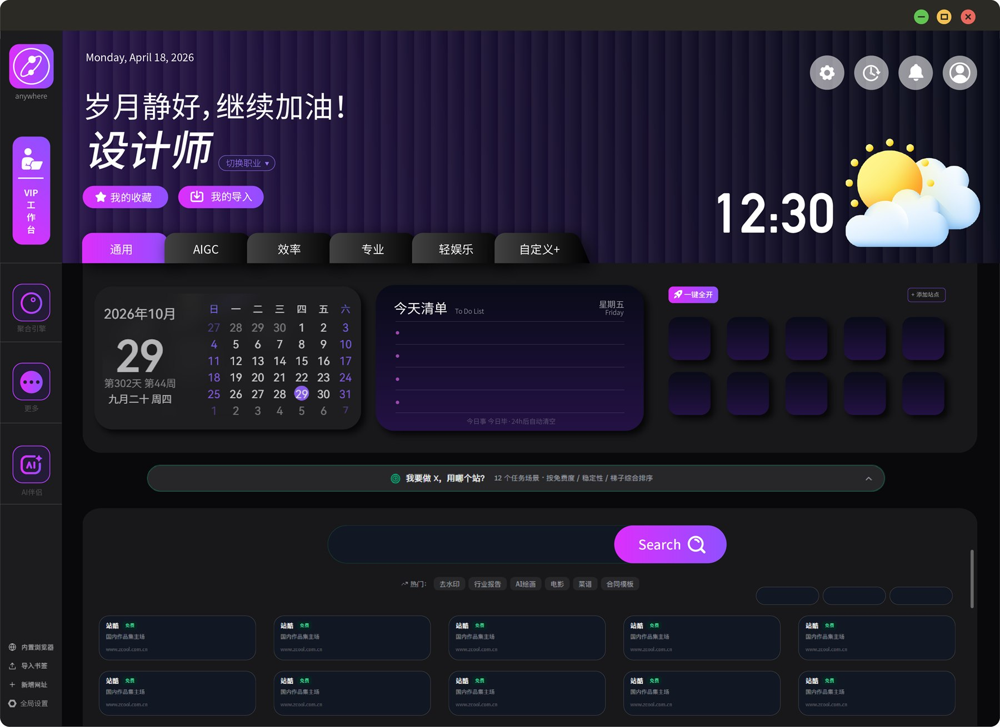
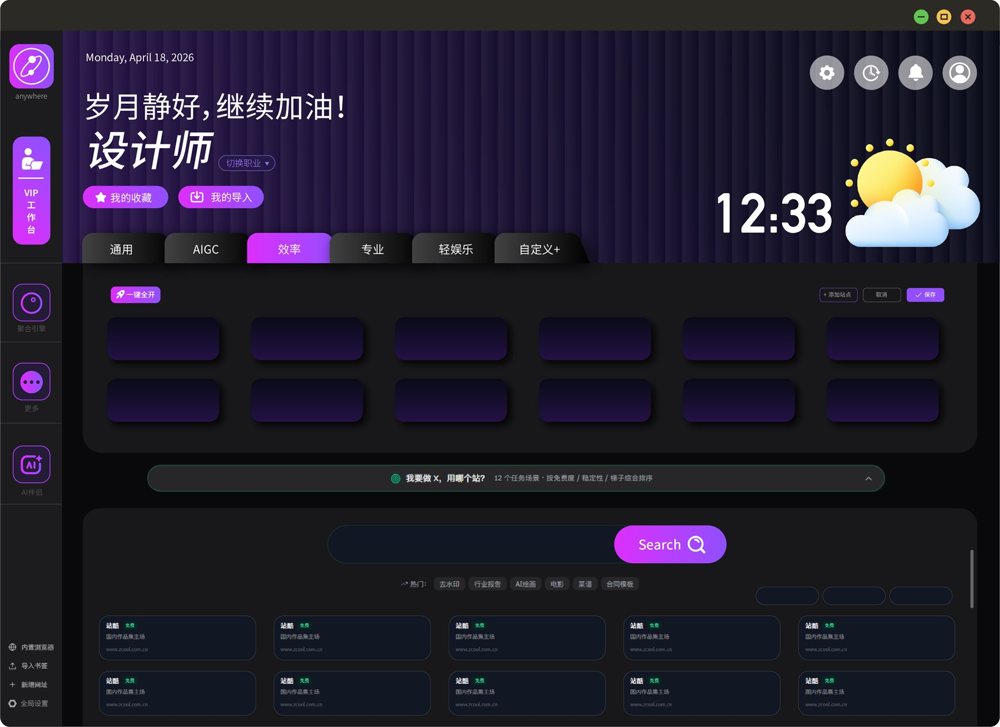
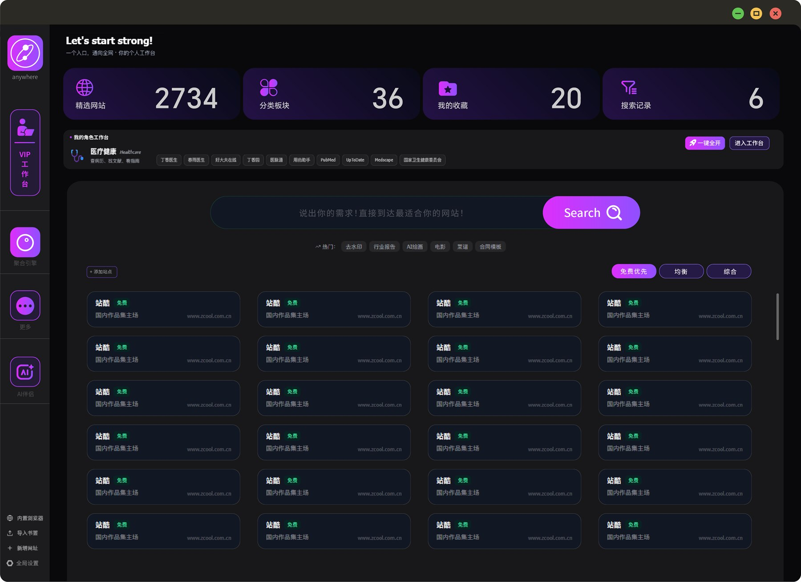
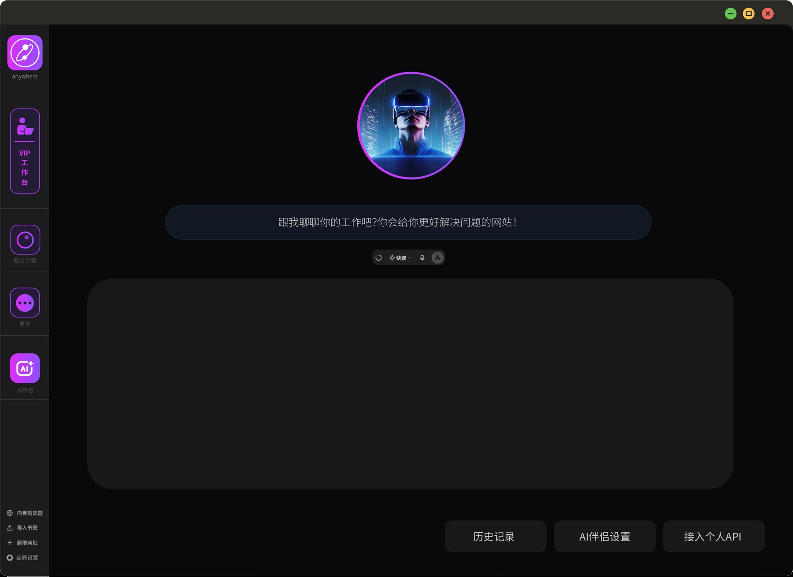

你不是缺工具，
是缺一个放工具的地方。
设计、开发、写稿、找素材，一天要在十几个网站之间来回跳。ANYWHERE 把这些入口排成一张你自己的工作台。
常用的事，一个窗口做完
职业站点矩阵
第一次启动选择你的职业，常用站点自动排好。设计师有 Behance、站酷、花瓣，开发有 GitHub、掘金、Stack Overflow。不喜欢就自己改。
- 20+ 职业预设，一键切换
- 自定义站点、自定义标签页
- 收藏夹与访问频次自动排序

聚合搜索引擎
输入一次关键词，同时送进你选定的多个站点。查资料不用再一个个复制粘贴。
- 按引擎、按站点自由组合
- 支持百度、Google、必应等
- 搜索结果直接在侧边打开

AI 助手
内置对话面板，随时问随时用。想用自己的模型，填一个 OpenAI 兼容接口就能接上。
- 默认提供每日免费额度
- 支持自定义 Base URL / Key / 模型
- 对话可保存，历史可检索

站点点开就在里面
和你的 Chrome 完全隔离
独立浏览器分区，不读取系统 Chrome 的账号和 Cookie。工作账号和生活账号互不打扰。
可以设为默认浏览器
注册 http/https 协议后，在飞书、微信里点链接，直接跳进工作台打开，不再弹出系统浏览器。
书签、历史、下载齐全
多标签、书签栏、历史记录、下载管理，还带广告与跟踪请求拦截。
密码保险箱
常用站点密码本地加密存储，走 Windows DPAPI，不落明文，不上传云端。
免费用，觉得值再升级
价格随版本调整，以实际购买页为准。未登录也可离线使用，数据只存本机。
你可能想问
支持哪些系统？
Windows 10 和 Windows 11 的 64 位版本。暂不支持 macOS、Linux 和 32 位系统。
安装时提示「未知发布者」怎么办？
当前版本尚未做代码签名，这是 Windows 的正常提示。点击「更多信息」→「仍要运行」即可。如果下载的文件被系统标记为锁定，右键安装包 → 属性 → 勾选「解除锁定」。
会读取我 Chrome 里的账号和数据吗？
不会。内嵌浏览器使用独立的浏览器分区，与系统 Chrome 完全隔离，也不读取 Chrome 的 Cookie 和登录状态。
不登录能用吗？
可以。登录只是为了云端同步和多设备共用。不登录时所有数据只保存在本机，换电脑需要手动导出导入。
我的数据存在哪里？
收藏、书签、历史、密码默认存在本机用户目录，密码用系统级加密。开启云同步后，收藏与工作空间会上传到你自己的账号下，不会用于其他用途。
是开源的吗？
是，采用 MIT 许可证，源码在 GitHub 公开。你可以自行编译、修改或二次分发。